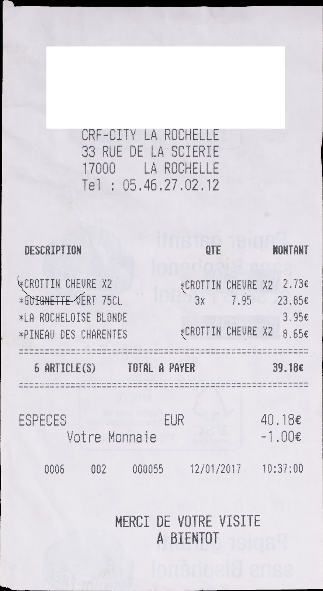
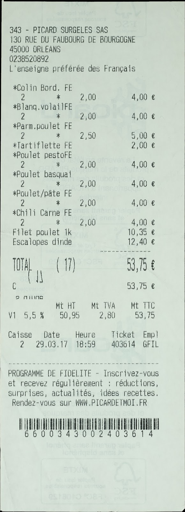

Work done between: [02/04/19 -> 16/04/19]
Tamapered Area Analysis
Effect on detection on decrease in patch area
We tried to find out the effect of reducing the size of tampering on tampering detection. We show the effect on the current methods used to detect tampering.

In the bar plot above, we show the number of pixels below which each method start to fail. Hence if the area of the patch is smaller than the threshold the particular method fails to detect the tampering. For comparision, generally images contains between about 40000(200x200) to 1048576(1024x1024) pixels.
1. In Yashas' architecture [1], image is converted to 64x64 patches and is checked if it has at least 20% region tampered(which corresponds to about 820 pixels).
2.JPEG artifacts [2] fails when the tampered region is less than 1500 pixels.
3.CMFD [3] fails when the tampered region is less than 3000 pixels.
4.Splicebuster/Noiseprint [4] fail when the tampered region is less than 4096 pixels.
Dataset Level Anaysis
For each dataset below we explain the dataset & show the distribuition of patch size in the dataset.
Below we show the distribuition in patch sizes across datasets and whether they contain small tampered regions. We also observe that the payslip dataset has the smallest tampered regions(tampered region of 3 pixels), followed by the CASIA and Find-it challenge(100 or 400 pixels respectively). IEEE dataset has tampering regions larger than 1000 pixels.
Click on the box below to open each dataset
-
1. IEEE
Released in 2013. Contains 451 fake images and 1000 pristine images. Resolution 780x1024.


-
2. CASIA V2
-
3. ICPR 2018 Find-it Challenge
The dataset is released by Mickaël Coustaty, University of La Rochelle,France. It was released as an ICPR challenge in 2018. Contains 200 fake images and 1800 pristine images. Resolution varying image sizes in HD resolution. Report on challenge
  -
4. Payslip Dataset
The dataset is released by Mickaël Coustaty, University of La Rochelle,France. The dataset contains 3 types of tampering. Copy Paste Intra, Copy Paste Inter & Imitation.